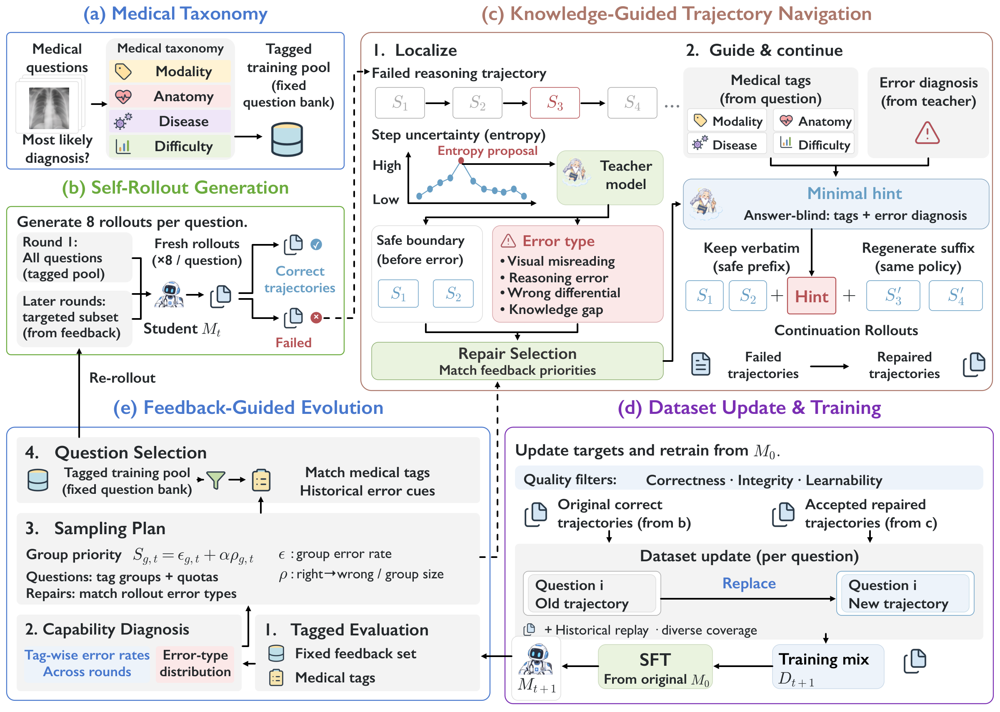
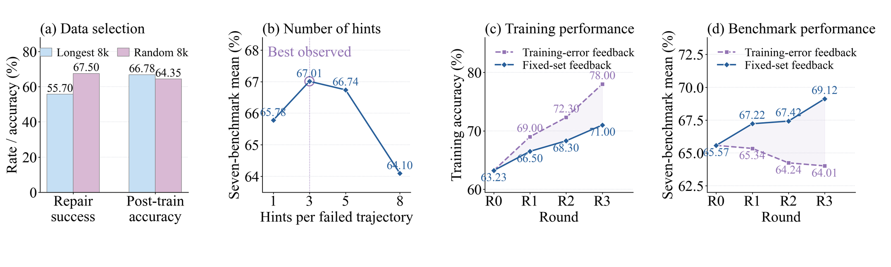

Error-conditioned repair
Type-guided suffix continuation reaches 71.80% repair success and 67.22% mean accuracy after the first round, exceeding generic-hint continuation by 7.30 and 3.02 points.
1Zhejiang University · 2Ant Group · 3Shanghai Artificial Intelligence Laboratory · 4Shanghai Jiao Tong University
Preserve valid reasoning. Repair the first error.
Let independent feedback guide what comes next.
A wrong answer can follow many valid observations. Keep the supported prefix and repair from the first consequential error.
A gold-blind auditor supplies a minimal, answer-free hint. The same student regenerates the suffix instead of receiving a complete teacher solution.
A fixed feedback set exposes capability gaps across medical tags and error types. These gaps guide fresh rollouts and repairs in the next round.

01 — THE PROBLEM & THE IDEA
Medical multimodal reasoning connects visual findings with anatomical context, disease knowledge, and clinical decisions. A model may recognize several findings correctly, then reach the wrong answer after misreading one image feature, overlooking a clinical clue, or making an unsupported differential diagnosis. The failure can be local even when its effect on the final answer is decisive.
Common supervision strategies either keep only answer-correct student rollouts or replace failures with teacher-generated rationales. Discarding a failure loses its valid reasoning. A complete teacher solution gives the student a path it did not produce. General-domain correction methods also offer limited guidance when the error depends on medical images, anatomy, or differential diagnosis.
Repair from the point of failure while preserving what remains valid. MedEvo uses a medical tag taxonomy and an error-type diagnosis to locate the first consequential error, identify a safe rollback boundary, and construct an answer-free recovery hint. The student then continues from its own supported prefix. The resulting supervision keeps the correction grounded in the student's reasoning.
The same failures reveal what the student needs to learn next. A separate feedback set turns those observations into priorities for subsequent data selection, linking individual repairs to continued improvement.
02 — THE KEY INSIGHT
A repair that is easy to produce is not necessarily the repair that teaches the student most.
On the longest 8,000 failed trajectories, repair success is lower than on 8,000 randomly selected questions: 55.70% versus 67.50%. Yet training on the longer failures gives higher downstream accuracy: 66.78% versus 64.35%. The supported observations and intermediate deductions inside a failed trajectory can still provide useful supervision.
The amount of help also matters. On the longest-8k subset, three hints yield the highest mean accuracy among the tested settings. Increasing guidance to five or eight hints reduces downstream accuracy. This experiment varies the number of hints while keeping five continuation attempts. All main experiments use one hint per failed trajectory.
Prioritizing training-set errors improves training accuracy but can hurt benchmark accuracy. A fixed feedback set better identifies weaknesses that transfer beyond the training pool. MedEvo uses medical tags to describe the question and error types to diagnose what went wrong; together, these signals direct fresh rollouts and repairs toward remaining capability gaps.
03 — THE METHOD
The current student samples eight trajectories per selected question. Correct rollouts enter screening; failed trajectories are divided into semantically complete steps. Token entropy proposes an audit region, but entropy is only a proposal. The auditor checks the images, question, and preceding reasoning and may place the repair boundary outside that region.
The auditor receives observable medical tags and the failed trajectory, but no reference answer, reference rationale, or answer-derived metadata. Its diagnosis distinguishes visual misreading, reasoning errors, differential diagnosis errors, and knowledge gaps, with twenty subtypes in total.
The last fully valid step defines the retained prefix. A minimal, answer-free hint directs re-examination without supplying a diagnosis or a corrected rationale. The same checkpoint generates up to five continuations, stopping at the first admitted repair.
Repairs must pass answer, boundary, integrity, and student-relative learnability checks. Learnability is scored on the new suffix alone and without the hint. Training then supervises the complete repaired response, including the recovery cue. No hints or auditor outputs are used at evaluation.
A separate set of 5,000 questions measures errors and regressions across medical tags. These statistics prioritize fresh rollouts and repairs. The dataset retains at most one active target per question, replacing an existing target only with an accepted improvement.
Every round resets the model to the original checkpoint with a fresh optimizer and learning-rate schedule. Experience is carried through the evolving dataset. Feedback questions guide selection and calibration but never enter training; test results do not influence data construction.
04 — RESULTS
Seven-benchmark mean accuracy (%), as reported in the paper.
| Backbone | Base | MedEvo | Gain |
|---|---|---|---|
| Qwen3.5-9B | 65.57 | 69.12 (R3) | +3.55 pp |
| Qwen3.5-35B | 67.91 | 73.04 (R3) | +5.13 pp |
| Qwen3.5-397B | 71.83 | 74.95 (R2) | +3.12 pp |
Results from Table 2 of the manuscript. The 9B and 35B MedEvo rows use R3. External models provide comparison context.
| Model | PMC-VQA | VQA-RAD | SLAKE | PathVQA | OmniMedVQA | MedXpertQA-MM | MMMU-Med | Avg. |
|---|---|---|---|---|---|---|---|---|
| GPT-5.6-sol | 60.43 | 70.29 | 81.34 | 54.84 | 76.67 | 77.50 | 86.24 | 72.47 |
| Gemini-3.8-Flash | 64.52 | 74.72 | 81.34 | 58.58 | 80.76 | 86.30 | 89.10 | 76.47 |
| LLaVA-Med-7B | 30.50 | 53.70 | 48.00 | 38.80 | 44.30 | 20.30 | 29.30 | 37.84 |
| HuatuoGPT-V-7B | 53.30 | 67.00 | 67.80 | 48.00 | 74.20 | 21.60 | 47.30 | 54.17 |
| BiMediX2-8B | 43.50 | 49.20 | 57.70 | 37.00 | 63.30 | 21.80 | 39.80 | 44.61 |
| InternVL2.5-8B | 51.30 | 59.40 | 69.00 | 42.10 | 81.30 | 21.70 | 53.50 | 54.04 |
| InternVL3-8B | 53.80 | 65.40 | 72.80 | 48.60 | 79.10 | 22.40 | 59.20 | 57.33 |
| LINGSHU-7B | 56.30 | 67.90 | 83.10 | 61.90 | 82.90 | 26.70 | 54.00 | 61.83 |
| Qwen3.5-9B (Base) | 59.20 | 68.10 | 76.80 | 48.80 | 82.20 | 47.40 | 76.50 | 65.57 |
| Baseline 1 (HHD) | 58.93 | 67.65 | 71.45 | 50.12 | 82.35 | 48.75 | 76.90 | 65.16 |
| Baseline 2 (TrajFusion) | 59.32 | 69.12 | 77.23 | 49.23 | 83.46 | 49.56 | 77.20 | 66.45 |
| Baseline 3 (Teacher SFT) | 61.23 | 70.15 | 71.60 | 53.20 | 81.90 | 52.30 | 78.14 | 66.93 |
| MedEvo (9B) | 62.68 | 70.40 | 78.23 | 53.34 | 85.41 | 54.50 | 79.28 | 69.12 |
| HealthGPT-14B | 56.40 | 65.00 | 66.10 | 56.70 | 75.20 | 24.70 | 49.60 | 56.24 |
| HuatuoGPT-V-34B | 56.60 | 61.40 | 69.50 | 44.40 | 74.00 | 22.10 | 51.80 | 54.26 |
| InternVL3-14B | 54.10 | 66.30 | 72.80 | 48.00 | 78.90 | 23.10 | 63.10 | 58.04 |
| InternVL2.5-38B | 57.20 | 61.40 | 70.30 | 46.90 | 79.90 | 24.40 | 61.60 | 57.39 |
| InternVL3-38B | 56.60 | 65.40 | 72.70 | 51.00 | 79.80 | 25.20 | 65.20 | 59.41 |
| LINGSHU-32B | 57.90 | 76.50 | 89.20 | 65.90 | 83.40 | 30.90 | 62.30 | 66.59 |
| Qwen3.5-35B (Base) | 62.40 | 70.50 | 70.10 | 49.15 | 83.20 | 60.00 | 80.00 | 67.91 |
| MedEvo (35B) | 64.63 | 75.83 | 80.30 | 56.01 | 83.97 | 66.50 | 84.02 | 73.04 |
MedEvo improves the 9B mean by 2.19 points over teacher-distillation SFT. The 35B and 397B results exceed GPT-5.6-sol’s mean; Gemini-3.8-Flash remains strongest in this comparison at 76.47%.
R0 is Base. The gain compares R3 with R0; 95% confidence intervals use 10,000 paired question-level bootstrap resamples. The average resamples independently within each benchmark.
| Benchmark | Accuracy (%) | R3 − R0 (pp) | ||||
|---|---|---|---|---|---|---|
| R0 | R1 | R2 | R3 | Gain | 95% CI | |
| PMC-VQA | 59.20 | 59.54 | 60.97 | 62.68 | +3.48 | [+1.9, +5.1] |
| VQA-RAD | 68.10 | 68.47 | 68.06 | 70.40 | +2.30 | [+0.8, +3.8] |
| SLAKE | 76.80 | 76.92 | 77.34 | 78.23 | +1.43 | [+0.2, +2.7] |
| PathVQA | 48.80 | 52.38 | 51.27 | 53.34 | +4.54 | [+2.6, +6.5] |
| OmniMedVQA | 82.20 | 80.81 | 81.58 | 85.41 | +3.21 | [+1.5, +4.9] |
| MedXpertQA-MM | 47.40 | 52.56 | 52.79 | 54.50 | +7.10 | [+5.2, +9.0] |
| MMMU-Med | 76.50 | 79.83 | 79.91 | 79.28 | +2.78 | [+1.3, +4.3] |
| Avg. | 65.57 | 67.22 | 67.42 | 69.12 | +3.55 | [+2.4, +4.7] |
MedXpertQA-MM improves by 7.10 points. All seven reported gain intervals exclude zero; these intervals measure question-level uncertainty for the compared checkpoints.
Type-guided suffix continuation reaches 71.80% repair success and 67.22% mean accuracy after the first round, exceeding generic-hint continuation by 7.30 and 3.02 points.
From a common R1 result of 67.22%, full MedEvo reaches 69.12% at R3. Repair-only training reaches 66.67%; removing medical tags yields 67.53%, and removing error-type feedback yields 66.21%.
05 — ANALYSIS & RELIABILITY
The longest 8,000 failed trajectories are harder to repair (55.70% vs. 67.50%) but yield higher downstream accuracy than random selection (66.78% vs. 64.35%).
With 1, 3, 5, and 8 hints per failed trajectory, mean accuracy is 65.78%, 67.01%, 66.74%, and 64.10%. This comparison keeps five continuation attempts; three hints perform best.
Training-error feedback raises training accuracy to 78.00% but lowers benchmark accuracy to 64.01%. Fixed-set feedback yields 71.00% and 69.12%, respectively.
The human audit reports 88.3% answer correctness and 78.5% image grounding. These are distinct quality dimensions; a correct answer does not certify every intermediate deduction.

All three runs follow Base < R1 < R2 < R3. R3 averages 69.09% ± 0.24, a 3.52-point gain over Base; the weakest run still gains 3.27 points.
| Round | Seed 1 | Seed 2 | Seed 3 | Mean ± SD |
|---|---|---|---|---|
| Base | 65.57 | 65.57 | 65.57 | 65.57 ± 0.00 |
| R1 | 67.22 | 67.05 | 67.38 | 67.22 ± 0.17 |
| R2 | 67.42 | 67.21 | 67.60 | 67.41 ± 0.20 |
| R3 | 69.12 | 68.84 | 69.31 | 69.09 ± 0.24 |
Every round retrains from the same base checkpoint: experience is carried by the evolving dataset. Feedback-set trends guide selection and are diagnostic, rather than independent evidence of generalization.
MedEvo uses a proprietary auditor. Answer-free hints can guide evidence re-examination but cannot supply missing medical facts. Future work should target grounded reasoning and study when feedback-driven gains emerge and saturate over longer training horizons.
06 — PAPER & RESOURCES
The updated manuscript includes the latest method, results, discussion, and linked appendices.
| Appendix | What it covers |
|---|---|
| A · Method details | Navigation, repair formulation, entropy localization, hints, and continuation. |
| B · Experiments & data | Round-wise feedback, twenty error subtypes, and repair statistics. |
| C · Taxonomy & errors | Medical tags, error definitions, information access, and training configuration. |
| D · Prompts | Question answering, next-round planning, auditing, and continuation templates. |
| E · Case studies | Chest and elbow radiograph examples with retained prefixes, hints, and continuations. |
| F · Related work | Medical reasoning, supervision, and self-evolution. |
| G · Baseline details | Baseline scope, comparison setup, and implementation details. |
The repository currently provides the manuscript, figures, and research overview. Training and evaluation implementation is not included in this release.